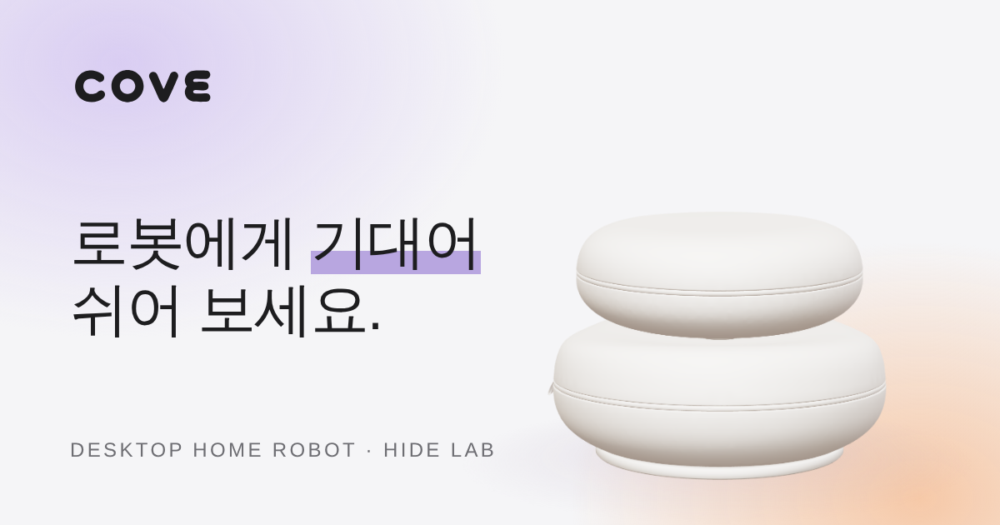
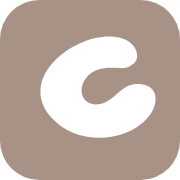
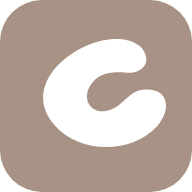

작은 디테일 미리보기
아래를 직접 만져 보세요. 모두 사이트에 적용하기 전의 모습이에요.
1 · 브라우저 탭 아이콘(파비콘)
지금 이 탭에도 같은 아이콘이 보여요. 작은 크기에서도 읽히도록 심벌 C만 썼어요.
2 · 링크 공유 카드 (메신저, 드라이브, SNS)

COVE — Desktop Home Robotbac-cy.github.io
3 · 아이콘 크기별 모습

홈 화면
1924 · 선택한 글자 색
이 문장을 마우스로 끌어서 선택해 보세요. 라벤더색으로 칠해져요.
5 · 스크롤바 색
스크롤바가 라벤더색으로 얇게 보여요.
Cove는 당신의 책상 위에서, 손이나 팔을 지그시 눌러 휴식을 돕는 로봇입니다.
묵직한 담요를 덮으면 마음이 놓이듯, 손이나 팔을 올려 기대면 안정감을 전해요.
해안가에서 바다를 부드럽게 감싸 안은 작은 만처럼, 쉬어 갈 자리가 되고자 해요.
곁에서 조용히 고개를 돌려 눈길을 끌고, 작은 몸짓으로 웃음을 건네요.
가까이, 조용하게, 다정하게.
6 · 링크 · 버튼 · 키보드 포커스
Tab 키로 이동하면 모든 요소에 같은 라벤더 링이 나타나요.